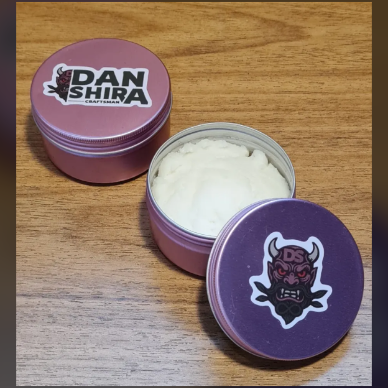
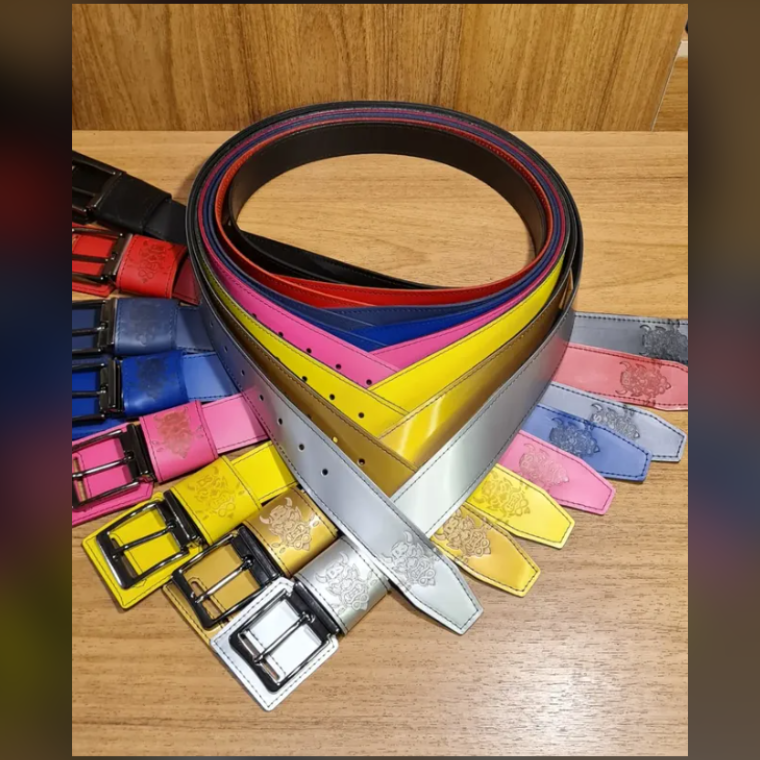
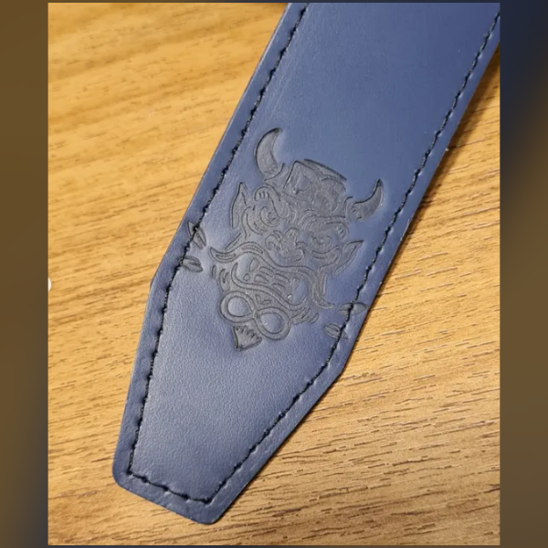
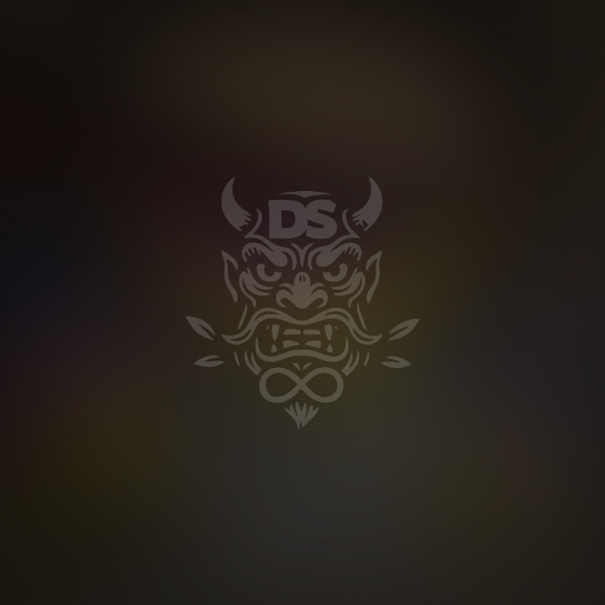
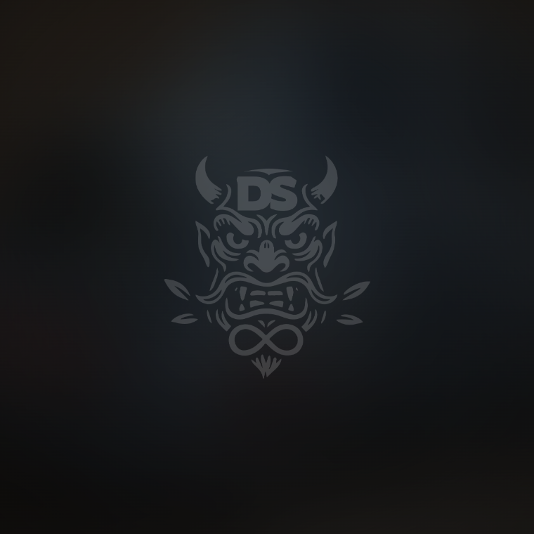
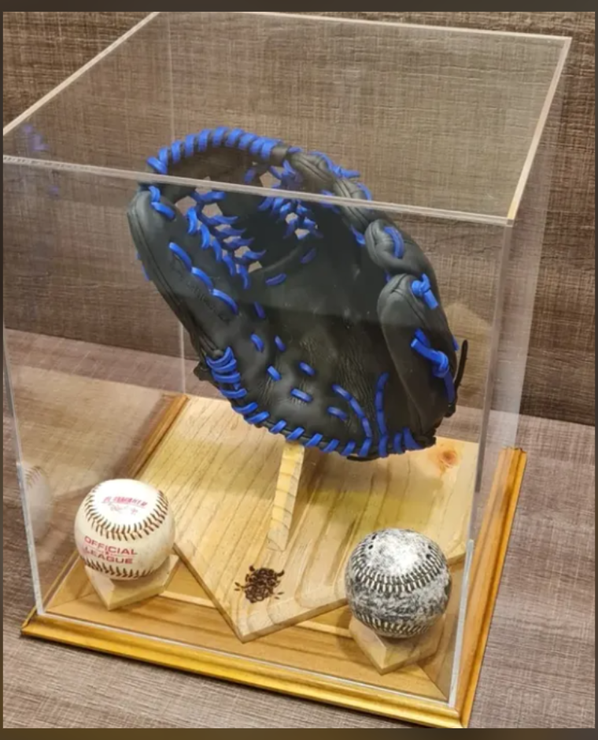
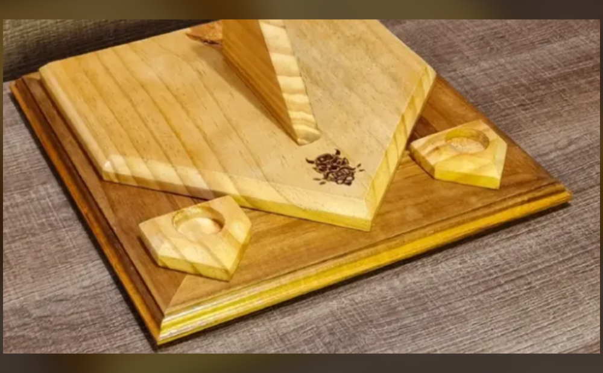
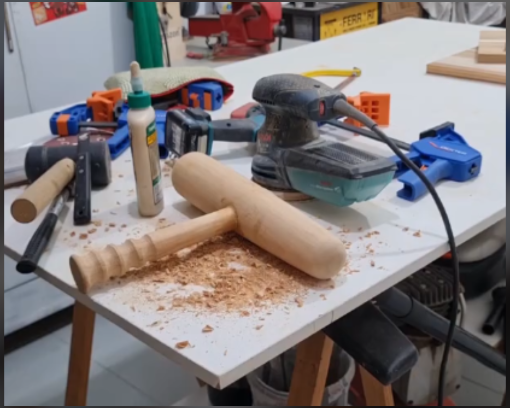

MANUTENÇÃO DE LUVAS · DESDE 2018 · SÃO PAULO
Sua luva
nova de novo
Cada peça passa pela bancada uma única vez, sem pressa. Couro condicionado, laçamento refeito, forma recuperada — para durar muitas temporadas.
O antes e o depois
▶ COMPARANDO SOZINHO · ARRASTE PARA ASSUMIR
OUTROS ÂNGULOS
O caminho da peça
Produtos do ateliê
PEDIDO PELO WHATSAPP
O que sobra de couro bom não vira resto: vira cinto, vira lata de creme, vira peça de bancada. Feito na mesma base de corte onde as luvas são abertas.
Cinto de couro
FEITO AQUICouro maciço, gravação do oni em baixo-relevo, passador contrastante e fivela cromada. Cortado no tamanho de quem vai usar.

Creme condicionador
Lata do ateliê. Hidrata sem pesar o couro.



IMAGEM PROVISÓRIA
IMAGEM PROVISÓRIAA OUTRA BANCADA
Couro e madeira
Quem restaura a luva também faz onde ela vai morar: expositor com cúpula, suporte em forma de home plate, base maciça com berço para as bolas — tudo lixado à mão e marcado a fogo com o oni.



Manda uma foto
da sua luva
Eu digo o que ela precisa, o prazo e como enviar. Sem compromisso.